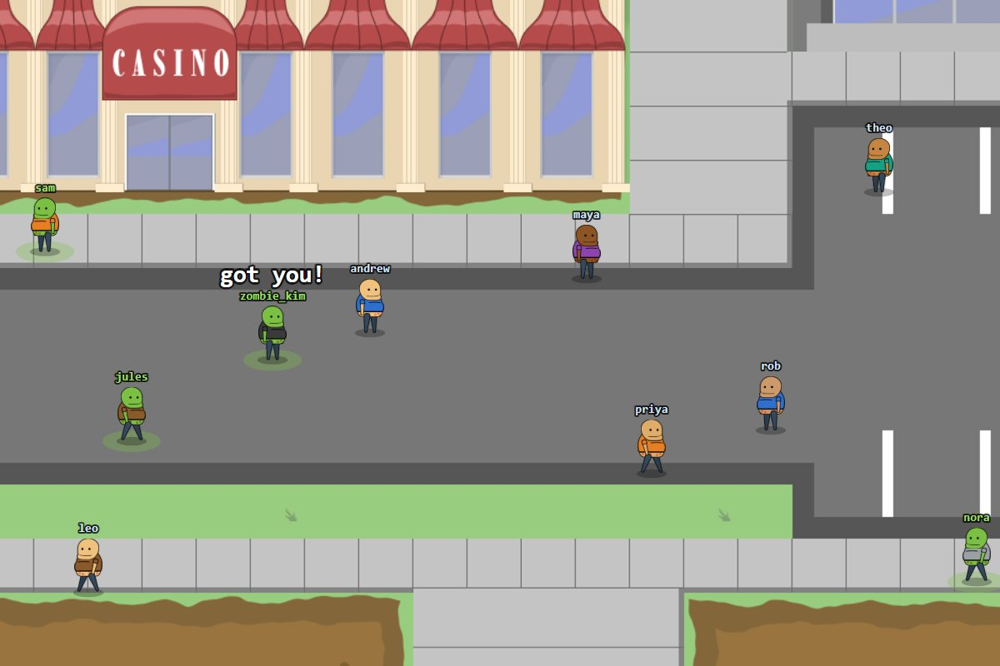

Artifact 02
Infection
A real-time multiplayer tag game in the browser. One player starts out infected, and every survivor they touch joins them.
Reflection
For this artifact I rebuilt Infection, a game I made before this class, over three sessions with an AI assistant. The first session replaced the colored circles with animated characters and made the game run leaner: I measured bandwidth before changing anything, and sending only what changed took an idle player from 6,454 bytes per second to zero. The second added leaderboards kept sorted in memory, using binary search from my algorithms class so a score change never re-sorts the list. The third let the lobby host choose the game length.
The biggest lesson was to measure and test before trusting a change. The benchmark showed where the waste was, and building the leaderboards uncovered scoring bugs, like infected players never being able to win, that I would not have found otherwise.
